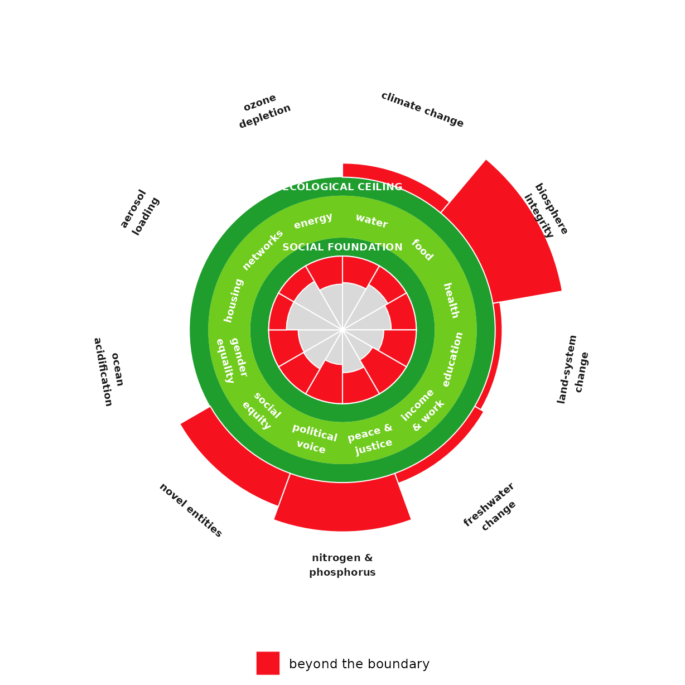
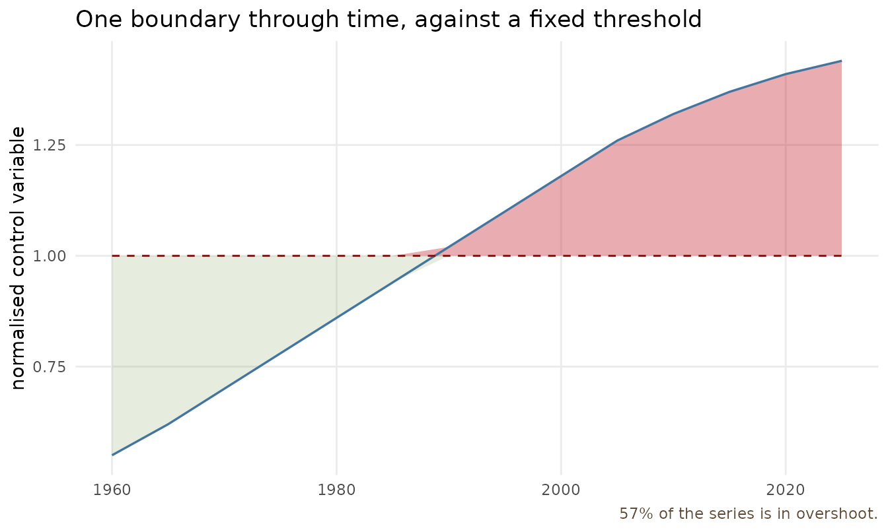
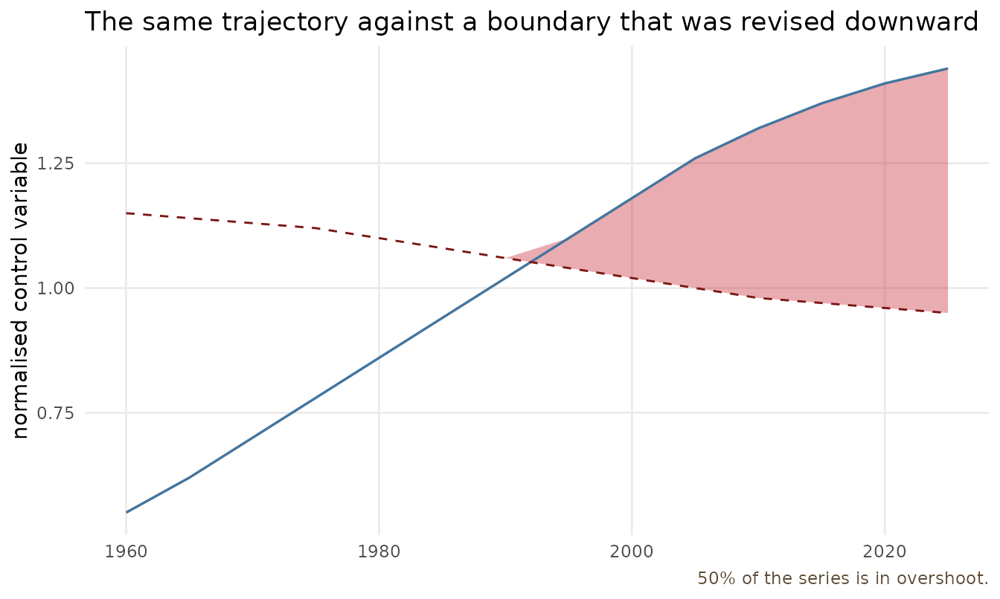

Planetary boundaries as moving targets
Source:vignettes/planetary-boundaries-over-time.Rmd
planetary-boundaries-over-time.RmdThe same data, two questions
The Stockholm Resilience Centre draws the nine planetary boundaries as a wedge wheel: nine spokes radiating from a centre, each one’s length showing how far a process has pushed past its boundary, green through yellow to red. It is a status readout for a single instant. Kate Raworth’s Doughnut takes those same nine boundaries as its ecological ceiling and adds a social floor beneath them, but it too is one moment in time.
Both answer where do we stand now. Neither answers how did we get here, and was the boundary itself moving while we did. That second question is what this package exists for. This article shows two things: how to feed the Doughnut’s ecological ceiling from planetary-boundary status data instead of hand-entering it, and how to put one of those boundaries back on a time axis where its movement becomes visible.
If what you actually want is the wedge wheel itself, do not rebuild
it here. The Potsdam Institute ships a maintained package, boundaries,
whose plot_status() draws exactly that diagram from real
Earth-system model output. ggboundary is the temporal
complement, not a second copy of the snapshot.
Feeding the ceiling from boundary status
Planetary-boundary status is usually published as a normalised
control variable: each process is rescaled so that the Holocene
baseline sits at 0 and the planetary boundary sits at 1, which is what
lets nine processes measured in ppm, kilograms and extinctions per
million species-years share one axis.
planetary_boundaries() reads that scale directly and
returns the ecological data frame doughnut()
wants.
# Normalised control variables: 0 = Holocene baseline, 1 = at the boundary.
# Illustrative magnitudes in the spirit of the 2023 nine-boundary assessment
# (six of nine transgressed); not exact published figures.
pb <- data.frame(
boundary = c("climate change", "biosphere integrity", "land-system change",
"freshwater change", "nitrogen & phosphorus", "novel entities",
"ocean acidification", "aerosol loading", "ozone depletion"),
value = c(1.4, 3.0, 1.2, 1.3, 2.4, 2.0, 0.9, 0.7, 0.3))
ecological <- planetary_boundaries(pb)
ecological
#> dimension overshoot
#> 1 climate change 0.4
#> 2 biosphere integrity 2.0
#> 3 land-system change 0.2
#> 4 freshwater change 0.3
#> 5 nitrogen & phosphorus 1.4
#> 6 novel entities 1.0
#> 7 ocean acidification 0.0
#> 8 aerosol loading 0.0
#> 9 ozone depletion 0.0Anything at or below the boundary comes back as zero overshoot and stays inside the ceiling; anything beyond it breaks outward, further out the further past. Feed that straight into the Doughnut alongside a social floor:
social <- data.frame(
dimension = c("water", "food", "health", "education", "income & work",
"peace & justice", "political voice", "social equity",
"gender equality", "housing", "networks", "energy"),
shortfall = c(0.36, 0.29, 0.34, 0.44, 0.53, 0.42,
0.53, 0.39, 0.40, 0.24, 0.24, 0.38))
doughnut(social, ecological)
The same works from raw numbers when you have a control variable and
its threshold rather than a normalised value.
planetary_boundaries() then measures overshoot as a ratio
to the threshold, so different units stay comparable:
raw <- data.frame(
boundary = c("climate change", "ocean acidification"),
level = c(421, 8.05), # atmospheric CO2 (ppm); surface ocean pH proxy
limit = c(350, 8.10))
planetary_boundaries(raw, value = "level", boundary = "limit")
#> dimension overshoot
#> 1 climate change 0.2028571
#> 2 ocean acidification 0.0000000If you already run PIK’s boundaries package, take its
normalised status output, keep the boundary-name and value columns, and
pass it here. The point is that the ceiling is now driven by data, not
typed in by hand.
Restoring the time axis
Here is what the wheel and the Doughnut cannot show. Climate change
did not arrive at 1.4 boundaries; it climbed there over decades, and the
boundary it is measured against is not a law of nature but a scientific
judgement that has itself been revised. geom_boundary()
draws both series.
# Illustrative normalised trajectory for one boundary, 1960-2025.
clim <- data.frame(
year = seq(1960, 2025, by = 5),
# control variable, normalised so 1 = the planetary boundary
value = c(0.55, 0.62, 0.70, 0.78, 0.86, 0.94, 1.02,
1.10, 1.18, 1.26, 1.32, 1.37, 1.41, 1.44),
# the boundary as a constant, at 1 by construction
bound = 1)
boundary_plot(clim, "year", "value", "bound",
title = "One boundary through time, against a fixed threshold",
y_lab = "normalised control variable")
The dashed line is the boundary, the crossing point is roughly where the safe operating space ended, and the red is the accumulating overshoot the snapshot compresses into a single wedge length. Already this says more than the wheel: it dates the transgression instead of only registering it.
But a fixed boundary is the weaker claim. Boundaries move. Scientists revise them as understanding improves, and for a locally-operated boundary, the assessment can be recalibrated with the system it describes. Passing a series to the boundary puts that on the page:
clim$bound_moving <- c(1.15, 1.14, 1.13, 1.12, 1.10, 1.08, 1.06,
1.04, 1.02, 1.00, 0.98, 0.97, 0.96, 0.95)
boundary_plot(clim, "year", "value", "bound_moving",
show_slack = FALSE,
title = "The same trajectory against a boundary that was revised downward",
y_lab = "normalised control variable")
Read against a fixed threshold the transgression looks like one clean crossing in the mid-1990s. Read against a boundary that tightened as the science firmed up, the crossing comes earlier and the overshoot is larger, because the target you were measured against was itself in motion. Which of the two is the honest picture is a scientific question, not a plotting one, and that is exactly the point: the moving-boundary view forces the question into the open, where a wedge length hides it.
When to use which
Reach for the wheel (boundaries::plot_status()) or
doughnut() when the audience needs the whole system at a
glance, all nine processes or the full social-and-ecological frame in
one figure. Reach for geom_boundary() when the question is
about one process over time, when the timing of a transgression matters,
or when the boundary itself is contested or endogenous. The three are
complements. This package supplies the one the others structurally
cannot.